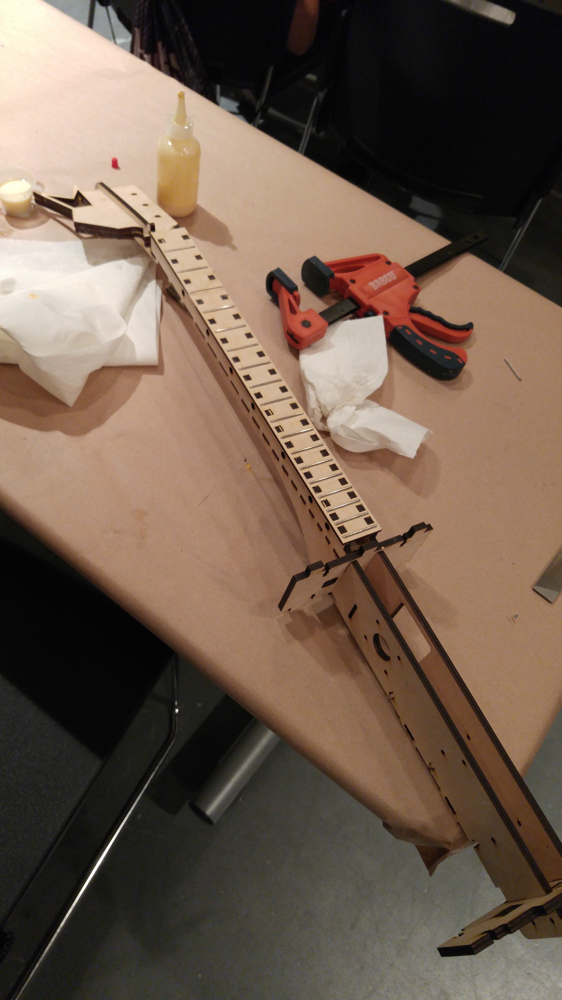

Making Web Pages: I started to create a better website. We started by using backgrounds. With the functions repeat-x and repeat-y, I was able to find the perfect background for my blog site. I also looked up some buttons online and put them into my blog site. I had to change a few colors based on the new background, but it looks good! Also, we made a test-preview of Google Maps using html files and inside scripts using Java Script.
Coding For Games 1: In today's class, we began to create multiple pickup items for my UFO game. Throughout the class, I played with the duplication function to create more pickups and more player-controlled UFOs! Amazing. Using Unity's physics 2D, I created collisions and a count for the pickups. The object of this tiny game is to collect all 12 pellets. I also played around with the UI text in unity. Awesome.
Musical Robots 1: Time to get our hands dirty. I began assembling the top and neck of the guitar by using glue and snapping the wood pieces in place, just like a puzzle. It looks so cool. I imagined myself strumming the strings on the fretboard. Although I snapped the board in half; it looks fine because I snapped it in place using a clamp. =)
